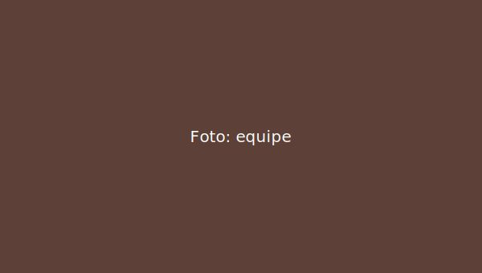

Missão
Promover a inclusão social de famílias em situação de vulnerabilidade.
Transformando comunidades por meio da educação, da alimentação e da cidadania desde 2012.
Promover a inclusão social de famílias em situação de vulnerabilidade.
Ser referência regional em projetos sociais transparentes até 2030.
| Ano | Refeições |
|---|---|
| 2021 | 4.800 |
| 2022 | 6.900 |
| 2023 | 8.700 |
| 2024 | 10.500 |
| 2025 | 12.000 |

Fundada por moradores do bairro, hoje a ONG atende mais de 800 famílias por ano.